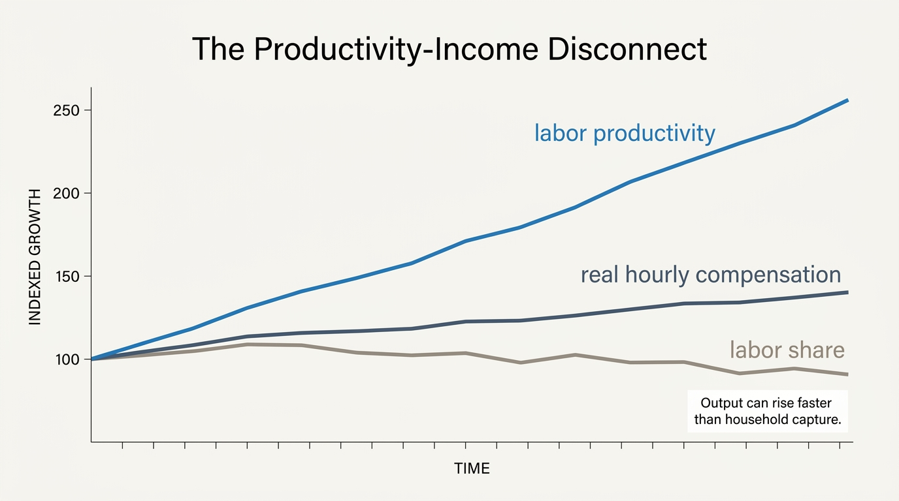
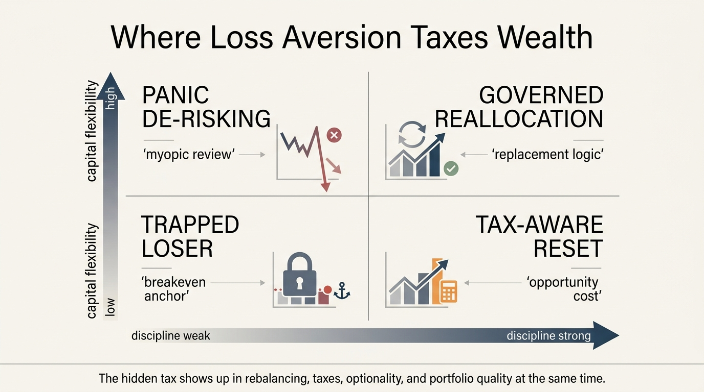
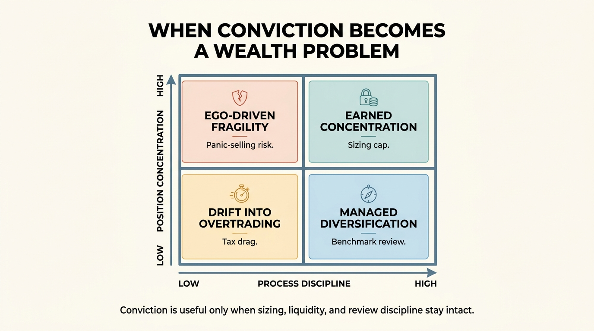
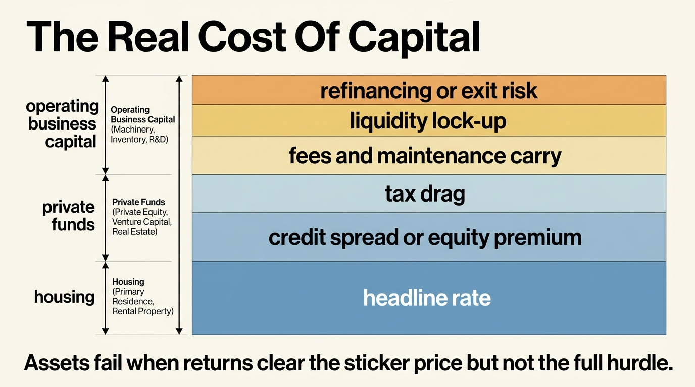
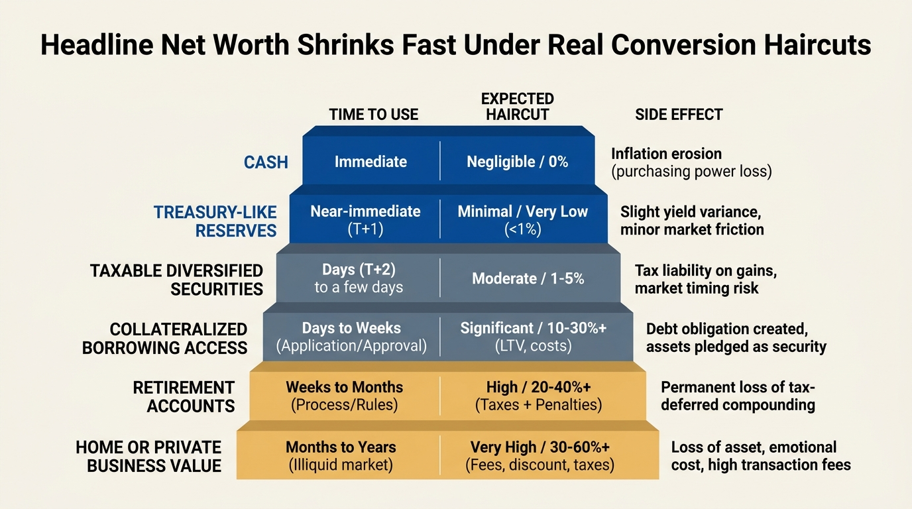

The Windfall Misallocation Problem
Why inheritances, exits, and equity payouts often lose much of their strategic value when one-time capital is mistaken for permanent wealth capacity.
Professional deep dives on distribution, affordability, intergenerational transfer, and practical balance-sheet strength.
Grouped entry pages for WealthMeter’s core themes: income architecture, real estate, distribution, transfer, compounding, geography, retirement, and tax friction.
A WealthMeter pillar hub on salary conversion, concentration risk, household structure, and the gap between income and durable wealth.
A WealthMeter pillar hub on mortgage lock-in, housing affordability, ownership drag, and the role of real estate in household resilience.
A WealthMeter pillar hub on percentile logic, global versus local baselines, and how distribution framing changes the meaning of rank.
A WealthMeter pillar hub on inheritance structure, liquidity gaps, and the way transfer timing changes real wealth outcomes.
A WealthMeter pillar hub on non-linear compounding, capital access, portfolio process, and the mechanics that make wealth acceleration durable.
A WealthMeter pillar hub on how place reshapes household wealth through housing, labor markets, taxes, mobility, and national baseline effects.
A WealthMeter pillar hub on retirement numbers, longevity planning, drawdown assumptions, and the fragility of standard retirement heuristics.
A WealthMeter pillar hub on tax drag, realization risk, state friction, and the way compensation and policy design influence real wealth durability.

Why inheritances, exits, and equity payouts often lose much of their strategic value when one-time capital is mistaken for permanent wealth capacity.

Why risk tolerance is usually mismeasured when willingness, need, and capacity are blurred together, and why real drawdowns reveal a different household truth.

Why major-city pay still looks attractive in gross terms, but often fails to convert into the same post-tax, post-housing, investable surplus it once did.

Why cash has to earn its place by serving a clear reserve or timing function, and why oversized balances often turn caution into a long-run wealth drag.

Why venture is defined by extreme outcome concentration, why average access often misses the winners that matter, and why most households should size it as bounded risk capital.

Why output per hour can keep rising while typical households capture a much smaller share through wages, savings, and durable wealth.

Why salary feels scalable until taxes, promotion scarcity, benefit dependence, and cost-of-living capture flatten the real path from pay to durable wealth.

A WealthMeter analysis of how rising fixed-cost lifestyles capture future income, reduce optionality, and turn comfort upgrades into a curve of growing balance-sheet rigidity.

Why low slack narrows attention, worsens short-horizon choices, and makes wealth fragility a self-reinforcing system rather than a one-time budgeting mistake.

Why digital status feeds turn filtered lifestyles into false financial benchmarks and push households toward expensive calibration errors.

Why geographic arbitrage is a temporary spread between earning power and local cost structure, and why the trade closes when prices, policies, and mobility frictions catch up.

Why rebalancing is a governance tool rather than a free-return machine, and how taxes, frictions, and behavior determine whether it helps or disappoints.

Why private-market prestige often exceeds private-market net investor economics once access, fees, valuation lag, and lost optionality are priced honestly.

Why income durability fails when the market value of a worker's skill stack decays faster than retraining, bargaining power, and liquidity can keep up.

Why private-market lock-up is not itself an edge, and why the real test is whether any net spread survives fees, stale marks, leverage, and lost flexibility.

Why net worth can keep rising while practical wealth stalls once assets turn illiquid, contribution rates flatten, and obligations absorb the marginal surplus.

Why inflation becomes a reset-speed mismatch across cash, wages, coupons, rents, and debt rather than one clean hit to household wealth.

Why refusing small realized losses often creates a larger hidden cost through trapped capital, weaker tax action, and delayed reallocation.

Why recent wins often mutate into larger bets, thinner controls, and a more damaging reversal for household wealth.

Why ownership should be priced as a carry system, not a purchase event, once taxes, maintenance, reserves, friction, and time burden are counted honestly.

Why buying no longer deserves an automatic edge once financing, owner carry, tenure, and mobility value are priced honestly.

Why the ability to switch roles, retrain, or wait for a better offer is mostly a liquidity, benefit, and job-design advantage.

Why paper wealth still fails the household stress test when reserves, conversion speed, and lender dependence are measured directly.

Why much of the upper tier sits in quiet ownership, partnership income, and regional operating capital rather than in public celebrity.

Why location freedom, low-friction exits, and portable work options create a real premium that standard net-worth views usually ignore.

Why many second homes behave less like wealth assets and more like duplicated carry stacks with weak utilization and expensive optionality loss.

Why most households lose more from reactive exits and delayed re-entry than from any single valuation mistake.

Why low-cost indexing remains the household default even as benchmark-linked flows and ownership concentration create a growing market-structure problem.

Why high compensation can still narrow strategic freedom when vesting schedules, benefit dependence, and concentration risk make leaving expensive.

Why wealth decisions fail when the real hurdle includes rate, tax, liquidity, and refinancing risk rather than sticker cost alone.

Why AI labor risk usually starts as task compression, hiring slowdown, and wage pressure before it becomes visible job loss.

Why most household concentration is hidden overlap, and why true edge is rarer than conviction.

Why the relevant balance-sheet number is value after deadline, haircut, and side effect rather than the dashboard total.

Why a modest February rebound still fits a weak-turnover housing regime once rates, supply, and local mortgage stress are read together.

Why the cheapest debt on your balance sheet can still reduce mobility, misprice home equity, and weaken total household option value.

How conflict risk transmits into oil, inflation, credit spreads, equity repricing, and household budget stress.

How AI-driven compensation compression, role fragmentation, and entry-level contraction are reshaping household wealth planning.

Why an equal inheritance headline can create radically different outcomes once liquidity, concentration, and tax structure are priced in.

How fixed-cost inflation and weak savings architecture can make two-income households less resilient than expected.

Why the same nominal net worth buys different liquidity, retirement durability, and transfer capacity across developed markets.

How RSUs, ISOs, and ESPP exposure can overstate real wealth when tax realization and concentration risk are ignored.

A forensic reset of retirement assumptions for a world with higher rates, sticky service inflation, and longer planning horizons.

How extended lifespan scenarios change compounding, drawdown, career sequencing, and intergenerational transfer design.

Why wealth growth becomes non-linear when access, cost of capital, and governance quality improve beyond scale thresholds.

A practical playbook for capturing AI upside while controlling concentration risk, valuation risk, and drawdown risk.

Why higher financing costs broke the old net-worth story, and how to shift from nominal wealth to liquidity-adjusted resilience.

How one balance sheet can produce different percentiles across global, national, local, and life-stage frames.

How city-level housing, taxes, and fixed-cost structures reshape compounding even when income is identical.

A framework to separate temporary wealth effect from process-driven long-term durability.

Why strong earnings can coexist with weak wealth resilience when conversion and governance systems are missing.

A structural read on top-10 and top-1 wealth pathways across two high-growth economies with different asset systems.

What basic income can and cannot deliver under current fiscal, labor-market, and inflation constraints.